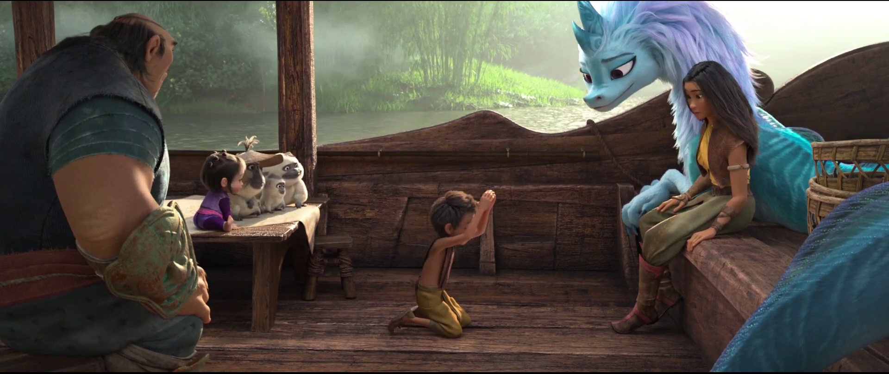
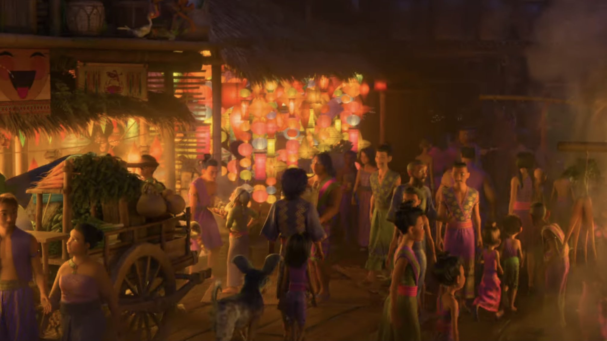
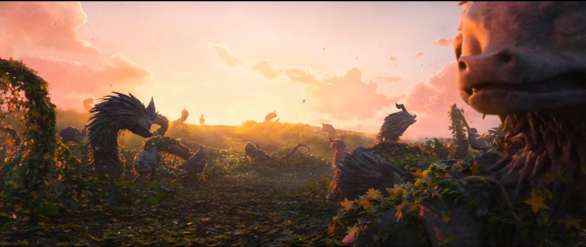
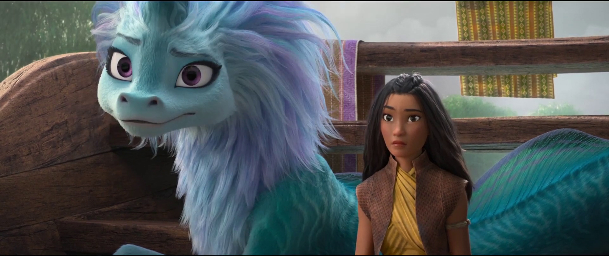

Free Download Raya and the Last Dragon (2021) Hindi Dubbed Full Movie Dual Audio (Hindi-English). This is a dual audio movie and available in 480p & 720p quality. This is a dual audio movie and available in 480p & 720p quality. This movie is based on Animation, Adventure & Comedy Genre. It features Kelly Marie Tran, Awkwafina, Gemma Chan as the main star cast of the movie. This movie is now dubbed in Hindi in 720p & 480p & 1080p MKV. This Print comes with very Good Audio and WEB-DL.
iWatchEverything.unaux.com is the best Website to To Download Hollywood Movies, Web Series, Tv Series, Hindi Dubbed And Multi Audio Movies. We Are Providing You Direct Secure Google Drive Link For Fast Downloading. Just Click On Download Button To Download All Movies In Few Clicks And Seconds. Also You Can Watch Movies Online.
Raya and the Last Dragon (2021)
107 min |Animation, Action, Adventure, Comedy, Family, Fantasy|05 Mar 2021
Rating: 7.5 / 10 from 40,668 users
In a realm known as Kumandra, a re-imagined Earth inhabited by an ancient civilization, a warrior named Raya is determined to find the last dragon.
Director: Don Hall, Carlos López Estrada, Paul Briggs(co-director), John Ripa(co-director)
Creator: Qui Nguyen (screenplay by), Adele Lim (screenplay by), Paul Briggs (story by), Don Hall (story by), Adele Lim (story by), Carlos López Estrada (story by), Kiel Murray (story by), Qui Nguyen (story by), John Ripa (story by), Dean Wellins (story by)
Actors: Kelly Marie Tran, Awkwafina, Izaac Wang, Gemma Chan.
Download Raya and the Last Dragon (Hindi Dubbed) 480p – 720p – 1080p ~ iWatchEverything.unaux.com
Movie Info:
Full Name: Raya and the Last Dragon
Release Year: 2021
Country: India
Subtitles: English
Runtime: 1h 47m
Language: Dual Audio [English+Hindi]
Quality: 480p & 720p & 1080p
Size: 450mb & 950mb & 2.8gb
Plot/Storyline:
Kumandra is a prosperous land rampaged by the Druun, evil spirits that petrify people and multiply after absorbing their life force. The dragons of Kumandra used their remaining magic to create an orb to ward off the Druun and revive everyone, but end up turning to stone themselves. A power struggle for the orb divides the Kumandra people into tribes, based on their placement along a giant river that resembles a dragon: Fang, Heart, Spine, Talon, and Tail.
500 years later, Chief Benja of the Heart tribe has been training his daughter Raya to guard the orb while firmly believing that the tribes will be united once again. During a feast among the five tribes, Raya befriends the daughter of Chief Virana of the Fang tribe, Namaari, and shows her the location of the orb. When the Fang Tribe makes an attempt to steal it, a fight breaks out among the tribes, resulting in the orb’s destruction. The Druun suddenly reappear as each of the tribes steal a piece, with Benja among the casualties.
ScreenShots:
   
Helpful Right? If you are looking for Raya and the Last Dragon (2021) Movie Download in Hindi Dubbed then don’t worry. Below you can easily find the download link. Enjoy Our Service!!
Download Raya and the Last Dragon (2021) (Hindi-English).
Thanks for visiting iWatchEverything Website he hub for Hollywood Movies & TV Series for downloading Raya and the Last Dragon (2021) dual audio.